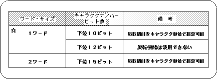

Return to previous page | Return to menu | Go to next page
There are two types of pattern name data: 1-word type and 2-word type.
The 1-word type is further divided into two according to the number of information bits used for character identification (the pattern identification bit is 10 or 12 bits).
Each data type has advantages and disadvantages, but SGL must select and use one of these three.

☆: 1 word size is recommended for SGL.
1-word type pattern name data is divided into two types depending on the choice of whether or not to introduce an inversion function bit (2 bits) in the pattern name data.
The character pattern inversion function, as the name suggests, is for controlling and executing the up / down / left / right inversion of the character pattern. In order to control this, it is necessary to reserve 2 reverse function bits in the pattern name data.
In the case of 2-word type pattern name data, the inversion function bit is always secured. However, in the case of 1 word type, there is no room for the number of bits that can be used. It will be cut by 2 bits.
Therefore, 1-word pattern name data is divided into two types depending on whether the reversal function is used or not, that is, the difference in the number of identifiable character patterns.
The difference between the 1-word type and the 2-word type is simply the number of character patterns that can be processed. However, in the 2-word type, the memory area used is simply doubled compared to the 1-word type, and the 2-word type must specify an absolute address, compared to the 1-word type that can be specified as an offset. Therefore, in consideration of ease of use, SGL recommends 1-word pattern name data.
If the pattern name data type is 1 word, it is not possible to specify all necessary pattern name data. Therefore, the system supplements the pattern name data with the lower 10 bits of the pattern name control register. This is called auxiliary data.
For details, refer to “HARDWARE MANUAL vol.2: VDP2 Manual”.